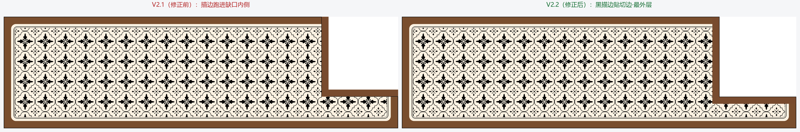
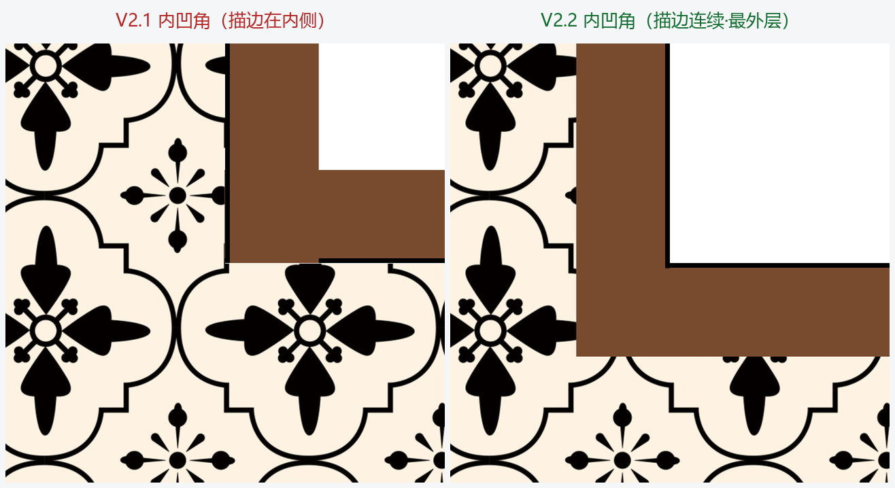

用户将 V13 版 L 形挖角脚本（lshape_crop.py / lshape_border_module.py）整合进本程序后，遇到三个问题：
诉求：纯自动检测 + 按 V13 交付模块的正确方向补边。
用真实素材「双面格-定制-定制尺寸-克罗印花;47.5×167cm.jpg」（像素 9921×2864，横版）跑通端到端后，定位到根因是边框检测「假阳性」：
| 检测路径 | 实测返回值 | 判定 |
|---|---|---|
_get_border_layers_robust | 1 层 (27,23,22) 2px | ❌ 只抓到最外 2px 近黑细线 |
detect_pool_material_borders（含守卫） | [(27,23,22), 2] | ❌ 假阳性，_is_real_border 误判为真 |
detect_border_v13 | (9, 172, (120,75,46)) | ✅ 黑描边 9px + 棕主带 172px |
_is_real_border 又把这条细线放行 → 程序以为「有边框」，画 2px 细线就收工；
真正能正确检出的 detect_border_v13 因为只在「检测返回空」时才兜底，根本没机会执行。
两处独立改动，均严格限定在 L 形挖角链路内：
文件：core/lshape_border.py 的 apply_lshape_border_completion。自动路径由「先旧检测，空则 V13 兜底」改为「先试 V13，检测不到黑描边（返回 None）再回退旧检测」。
# 改动前：先 detect_pool_material_borders，返回空才兜底走 V13
border_layers_src = detect_pool_material_borders(detect_img, bg_color)
if not border_layers_src:
v13 = detect_border_v13(detect_img) # ← 假阳性时永远到不了这里
# 改动后：V13 优先，检测不到黑描边才回退旧检测
v13 = detect_border_v13(detect_img)
if v13 is not None:
return _apply_v13_path(..., manual_edge_px=v13[0],
manual_band_px=v13[1], manual_band_color=v13[2])
border_layers_src = detect_pool_material_borders(detect_img, bg_color)✓ V13 对「黑描边 + 主带」结构可靠（1D 段分析），对纯黑框素材返回 band=0 仍兼容旧用例。
文件：gui/lshape_panel.py。删除「🎨 边框参数（V13 手动覆盖）」GroupBox 及 6 个方法（_set_v13_fields_enabled / _on_v13_enable_toggled / _on_v13_color_clicked / _update_v13_color_button / get_v13_manual_params / set_v13_manual_params）；_on_param_changed 与 _apply_lshape_params 不再写 manual_* 字段。
✓ 用户操作链路退化为纯自动；worker 读取的 manual_* 恒为 None。
注：core/geometry.py 的 lshape_manual_* 字段保留——它们是 V13 路径的数据通道，改名/删除会引入无谓风险，故不动。
patch_lshape_cut（V2.2）首轮修复（V2.1）沿用项目原有的 draw_border_layers_on_cut_edges，把边框带向缺口区内侧延伸——方向反了：正确效果应为沿切边在保留区一侧补「黑描边 + 主色带」（黑描边贴切边、在最外层；缺口区保持洞底色，无描边）。
V2.2 按 E:\ima-测试L型挖角输出\确认V13\lshape_border_module.py（用户交付版）原样移植：
patch_lshape_cut() / _fill_vertical_horizontal()：切边补齐核心——垂直切边黑带全高（与素材顶边黑描边衔接）、主带不压顶边黑；水平切边黑带全宽（覆盖外缘防白缝）、主带避外缘黑；内凹角按 d = max(dx, dy) 几何分层，黑带沿 L 形轮廓连续。detect_border()：交付版公开 API（失败抛 ValueError）；项目内部路由仍用 detect_border_v13（返回 None 便于回退）。_apply_v13_path() 重写绘制段：在 outer_rect 子图上操作（缺口贴子图角落，与渲染 mask 同源），翻转统一到 tr 由 patch_lshape_cut 内部处理；厚度按 scale 换算（预览 LOD 自动适配）。删除自研的 apply_v13_concave_corner_layer。# V2.2 _apply_v13_path 绘制段（节选）
sub = canvas_arr[oy:obottom, ox:oright, :] # outer_rect 子图（与 mask 同源）
patched = patch_lshape_cut(sub, cut_corner, bx0, by0, cw_r, ch_r,
edge_canvas, band_canvas, color_src)
canvas_arr[oy:obottom, ox:oright, :] = patched用真实克罗印花素材（双面格-定制-定制尺寸-克罗印花;47.5×167cm.jpg，像素 9921×2864 横版，tr 挖角 32.5×34.03cm）端到端渲染，沿垂直/水平切边密集采样：
| 指标 | 修复前（旧路径） | V2.1 首轮修复 | V2.2 方向修正 |
|---|---|---|---|
| 检测日志 | 1 层边框 2.0px [(27,23,22)] | V13 命中 edge=9 band=172 | V13 命中 edge=9 band=172 |
| 黑描边带宽 | ≈ 2px（不可见） | ≈ 9px | 9px（自动检测=素材原宽） |
| 棕主带带宽 | 0px | ≈ 170px | 170px |
| 黑描边位置 | — | ❌ 缺口内侧（里层） | ✅ 贴切边·最外层 |
| 缺口区（洞底） | — | 被边框带覆盖 | ✅ 纯白，无描边 |
| 内凹角连续性 | — | — | ✅ 256/256 = 100% |
V2.2 垂直切边实测采样（从切边向两侧）：保留区侧 黑9px → 棕170px → 素材内容；缺口区侧 纯白 120px+——完全对应期望效果「红色标注处有描边、蓝色区域无描边」。
整图并排对比（左＝V2.1 首轮修复·描边在缺口内侧，右＝V2.2 修正·描边贴切边最外层）：

内凹角局部放大对比（左＝V2.1，右＝V2.2）：

tests/core/test_lshape_border.py：23 passed——其中端到端用例 test_bordered_material_paints_cut_edges_only 已按 V2.2 方向更新断言：黑带采样点改到切边保留区一侧，并新增「缺口区不被涂色」「内凹角黑带连续」两类断言。core/lshape_border.py、gui/lshape_panel.py 与 tests/core/test_lshape_border.py 三个文件，未触碰 render_design 其他路径及裁剪主逻辑；core/image_ops.py 调用点无需改动（patch 在 border_mask 涂黑之后执行，自动覆盖切边旁区域）。detect_pool_material_borders（旧检测器）保留为 V13 检测失败时的回退路径，未删除——它仍是纯黑框等结构的兼容通道；compute_cut_edge_bboxes / draw_border_layers_on_cut_edges 随旧路径保留。crop_tr_standalone（独立对照版）未移植——项目侧已由 pytest 端到端用例覆盖同等契约。scripts/_archive/，产品源码零污染。